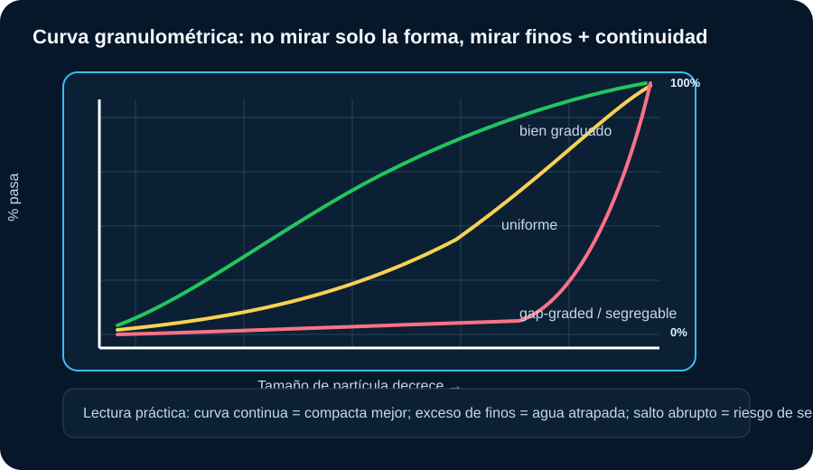
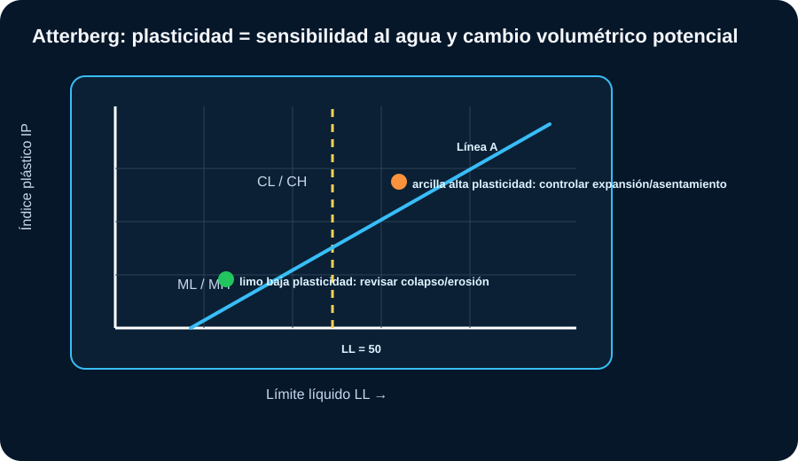
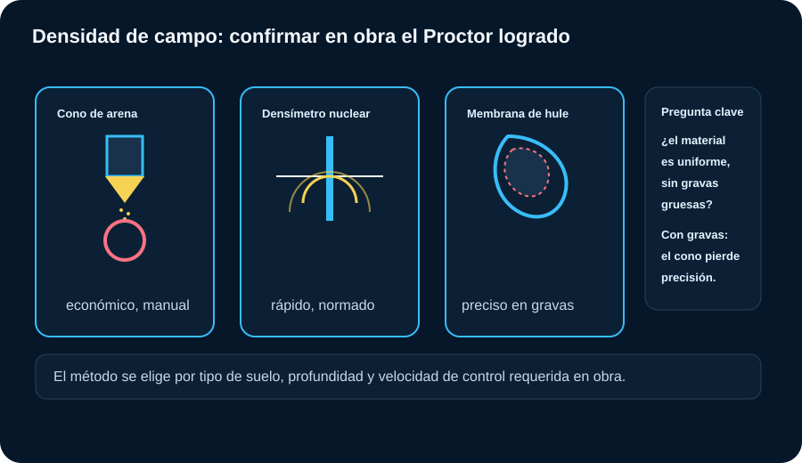
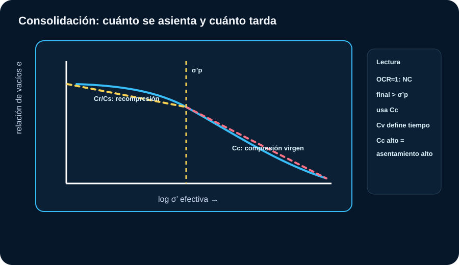
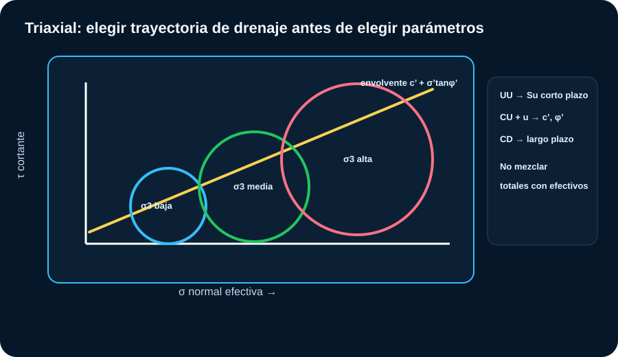

Mecánica de Suelos
El objetivo no es acumular ensayos: es transformar resultados en decisiones. Cada gráfico debe contestar: qué suelo tengo, cómo responde al agua, cuánto se deforma, cómo resiste y qué riesgo constructivo genera.
Mapa de decisión
| Pregunta de ingeniería | Ensayos que ayudan | Decisión práctica |
|---|---|---|
| ¿Qué material tengo? | Visual-manual, granulometría, Atterberg, SUCS/AASHTO | Clasificar, seleccionar uso y anticipar problemas de agua o plasticidad. |
| ¿Se puede compactar? | Proctor, humedad, densidad de campo | Aceptar/rechazar capas, airear, humedecer, cambiar equipo o material. |
| ¿Se asienta? | Edómetro, e-log σ’, Cc, Cr, Cv, OCR | Estimar magnitud y tiempo; decidir precarga, drenes o cimentación profunda. |
| ¿Resiste al corte? | Inconfinada, corte directo, triaxial UU/CU/CD | Diseñar taludes, cimentaciones, contenciones y etapas constructivas. |
| ¿Drena? | Permeabilidad, granulometría, observación del NF | Definir filtros, bombeo, drenaje, riesgo de erosión interna o presión de poros. |
Regla senior
Un parámetro aislado no diseña. Un IP alto sin humedad no dice lo mismo que un IP alto saturado; un Cc alto sin incremento de esfuerzo no define asentamiento; un N-SPT sin energía corregida es sólo un número con casco.
Granulometría
La curva muestra distribución, continuidad, finos y riesgo de segregación o drenaje deficiente.

Cómo leer: curva continua y bien distribuida suele compactar mejor; curva uniforme puede drenar pero tener baja trabazón; exceso de finos penaliza drenaje y sensibilidad al agua.
Criterios usuales
| Resultado | Lectura técnica | Qué hacer en obra |
|---|---|---|
| Finos < 5% | Material granular limpio. | Verificar drenaje, trabazón y compactación; controlar segregación. |
| Finos 5–12% | Zona de doble símbolo SUCS; comportamiento mixto. | Cruzar con Atterberg; puede cambiar mucho con humedad. |
| Finos > 12% | El comportamiento empieza a depender de plasticidad. | No aprobar como base/subbase sin revisar IP, equivalente de arena y especificación. |
| Cu y Cc adecuados | Gradación favorable si cumple criterios SUCS. | Mejor compactabilidad, menor vacíosidad, buen soporte si el material es durable. |
| Curva con salto | Riesgo de material gap-graded. | Controlar segregación durante acopio, transporte, extendido y compactación. |
Norma: tamizado según ASTM D6913 (sucesora de la D422 para la fracción gruesa) y sedimentación por hidrómetro según ASTM D7928 cuando hay finos significativos; equivalentes AASHTO T27/T88. Criterio de obra: un Cu y Cc "correctos" sobre una curva con salto real pueden esconder un material segregable; pedí siempre la curva completa, no solo los coeficientes resumidos.
Límites de Atterberg
Relacionan plasticidad, sensibilidad al agua y comportamiento volumétrico.

Cómo leer: sobre la línea A predominan arcillas; bajo la línea A predominan limos. A LL alto e IP alto, mayor riesgo de compresibilidad, expansión o pérdida de soporte al humedecerse.
Interpretación práctica
| Parámetro | Rango orientativo | Criterio de obra |
|---|---|---|
| IP < 7 | Baja plasticidad. | Puede ser más trabajable, pero revisar erosión, colapso o sensibilidad si es limo. |
| IP 7–17 | Plasticidad media. | Controlar humedad de compactación y variación estacional. |
| IP > 17 | Alta plasticidad. | Riesgo de expansión, contracción, bombeo, baja capacidad en pavimentos. |
| LL > 50 | Alta plasticidad. | Revisar asentamiento, estabilidad de excavación y cambio volumétrico. |
| IL > 1 | Humedad natural supera LL. | Suelo muy blando/sensible: no asumir soporte sin ensayos de resistencia. |
Norma: ASTM D4318, base también de la clasificación AASHTO M145 (la clasificación de la que deriva fue desarrollada por Hogentogler y Terzaghi en 1929). La carta de plasticidad y la Línea A son aporte de Casagrande, colaborador cercano de Terzaghi. Criterio de obra: exigí el ensayo con varios puntos de límite líquido, no una sola corrida; un LL estimado con un solo golpe puede desplazar el punto sobre la carta y cambiar la clasificación.
Compactación: Proctor estándar y modificado
Dos energías de compactación distintas, dos curvas distintas; usar la curva equivocada como referencia es un error clásico de obra.
Por qué hay dos energías
| Parámetro | Proctor Estándar (ASTM D698 / AASHTO T99) | Proctor Modificado (ASTM D1557 / AASHTO T180) |
|---|---|---|
| Energía de compactación | 594 kJ/m³ | 2700 kJ/m³ (≈4.5× mayor) |
| Capas / golpes por capa | 3 capas / 25 golpes | 5 capas / 25 golpes |
| Maza | 2.5 kg, caída de 305 mm | 4.5 kg, caída de 457 mm |
| Densidad seca máxima típica (arena) | 1.75-1.85 t/m³ | 1.90-2.05 t/m³ |
| Humedad óptima típica | 12-16% | 8-13% (menor) |
| Uso habitual en obra | Terraplenes y rellenos de baja exigencia | Bases, subrasantes bajo tránsito pesado, pistas aeroportuarias |
Criterio de obra: la energía modificada existe porque el tránsito pesado real (camiones, aeronaves) induce más densificación con el tiempo que la energía estándar simula; exigir el modificado en una capa que solo verá cargas livianas sobreespecifica y encarece sin necesidad, mientras que aceptar el estándar en una base bajo tránsito pesado deja la capa subdensificada para el servicio real. El error más común en campo no es elegir mal la energía, sino comparar la densidad in situ contra la curva equivocada (D698 cuando el pliego pedía D1557, o viceversa): el mismo dato de densidad de campo puede leerse como "aprobado" o "rechazado" según contra cuál de las dos curvas se compare.
Verificación en obra: humedad y grado de compactación
El Proctor da la meta de laboratorio; esta tabla traduce el resultado de campo en una acción concreta.

Cómo leer: del lado seco cuesta densificar; del lado húmedo se pierde resistencia y aparece bombeo. La humedad óptima no es decoración, es instrucción de obra.
Decisiones frecuentes
| Resultado | Diagnóstico probable | Acción |
|---|---|---|
| w < wopt - 2% | Material seco, rígido, baja densificación. | Humedecer y homogeneizar antes de compactar. |
| w ≈ wopt | Condición favorable. | Compactar con equipo adecuado y verificar densidad. |
| w > wopt + 2% | Material húmedo, bombeo o deformación. | Airear, escarificar, mezclar con material seco o reemplazar. |
| GC < especificado | No cumple densidad. | Recompactar o rediseñar procedimiento; no tapar con la siguiente capa. |
Norma: ASTM D698/AASHTO T99 para energía estándar; ASTM D1557/AASHTO T180 para energía modificada. Criterio de obra: comparar el GC contra la curva equivocada (estándar vs. modificada) es uno de los errores más frecuentes en control de obra; CIRSOC y NSR-10 suelen exigir la modificada para subrasantes y bases bajo tránsito pesado.
Densidad de campo
El Proctor define la meta; el método de campo confirma si la obra la alcanzó.

Cómo elegir: el cono de arena es el método de referencia, económico y sin licencia, pero pierde precisión en gravas gruesas; el densímetro nuclear es rápido pero requiere licencia y calibración; la membrana de hule rinde mejor en materiales gruesos o irregulares donde el cono falla.
Comparación práctica
| Método | Ventaja | Cuidado principal |
|---|---|---|
| Cono de arena | Económico, no requiere licencia, referencia clásica del ensayo. | Lento; pierde precisión en gravas gruesas o suelos muy sueltos. |
| Densímetro nuclear | Rápido, muchas lecturas por turno. | Requiere licencia, calibración y protocolo de radioprotección. |
| Membrana de hule | Buen desempeño en gravas y materiales irregulares. | Más lento que el nuclear; cuidado al perforar la membrana. |
| GC < especificado | No cumple la densidad de proyecto, sea cual sea el método. | Recompactar o ajustar humedad antes de tapar con la siguiente capa. |
Norma: cono de arena ASTM D1556/AASHTO T191; membrana de hule ASTM D2167; densímetro nuclear ASTM D6938. Criterio de obra: en suelos saturados o muy gravosos el cono de arena pierde precisión; en esos casos conviene la membrana de hule o, si hay licencia y calibración vigente, el método nuclear.
Caso de obra resuelto (cono de arena): control de compactación de una subbase. Del hoyo de ensayo se extraen 1850 g de suelo húmedo, y el cono mide un volumen de 950 cm³. Densidad húmeda = 1850/950 ≈ 1.95 g/cm³. Con humedad de campo w=9%, la densidad seca resulta γd = 1.95/(1+0.09) ≈ 1.79 g/cm³. Si el Proctor Modificado de laboratorio dio γd_max=1.86 g/cm³, el grado de compactación GC = 1.79/1.86×100 ≈ 96%. Si el pliego exige 95% del Proctor Modificado, ese resultado cumple; si la capa es base bajo tránsito pesado y exige 98%, el mismo número no cumple y hay que recompactar antes de tapar.
Permeabilidad
El agua gobierna drenaje, presión de poros y desempeño a largo plazo.
| Suelo | k aproximado | Lectura práctica |
|---|---|---|
| Grava limpia | 10⁻¹ a 10⁻³ m/s | Drena rápido; revisar filtros y erosión interna. |
| Arena | 10⁻³ a 10⁻⁵ m/s | Puede drenar, pero depende de finos y densidad. |
| Limo | 10⁻⁵ a 10⁻⁷ m/s | Drenaje lento; susceptible a piping/erosión o colapso. |
| Arcilla | <10⁻⁷ m/s | Consolidación lenta; presión de poros crítica. |
Norma: ASTM D2434 (carga constante, suelos granulares) y ASTM D5084 (pared flexible, suelos finos de baja permeabilidad). Criterio de obra: el k de laboratorio se mide sobre una muestra pequeña y suele subestimar el k real de campo, porque no captura fisuras, capas delgadas ni trayectorias preferenciales; cruzar siempre con ensayos in situ (Lefranc, Lugeon) cuando el proyecto lo justifique.
Relaciones de fase
Humedad, vacíos y saturación alimentan esfuerzos efectivos, compactación y asentamientos.

Cómo leer: el mismo suelo cambia de comportamiento según esté seco, húmedo o saturado frente al problema analizado; e, n y Sr no son datos para archivar, alimentan σ’, compactación y asentamientos.
Calculadora preliminar de fase
e = Gs·γw/γd − 1 · n = e/(1+e) · Sr = w·Gs/e, con γw = 9.81 kN/m³.
Norma: Gs se determina con ASTM D854 (picnómetro). Criterio de obra: e, n y Sr son cálculos, no mediciones directas; un error de pesada o un Gs asumido "de tabla" se propaga a todos los derivados sin que se note, hasta que el asentamiento real no cierra con el calculado.
Consolidación unidimensional
El edómetro no contesta “si aguanta”; contesta cuánto se asienta y en qué tiempo.

Cómo leer: si la tensión efectiva final supera σ’p, el suelo entra en compresión virgen y el asentamiento crece con Cc. Cv gobierna la velocidad, no la magnitud final.
Rangos de interpretación
| Resultado | Lectura | Impacto en obra |
|---|---|---|
| Cc < 0.20 | Compresibilidad baja a moderada. | Asentamientos usualmente manejables, revisar diferencial. |
| Cc 0.20–0.40 | Compresibilidad media. | Puede controlar servicio en plateas, rellenos y terraplenes. |
| Cc > 0.40 | Alta compresibilidad. | Evaluar precarga, drenes, mejora o cimentación profunda. |
| OCR ≈ 1 | Normalmente consolidado. | Alta sensibilidad a nuevas cargas; usar Cc si supera σ’p. |
| OCR > 1 | Sobreconsolidado. | Menor asentamiento en recomprensión; cuidado si la carga supera σ’p. |
| Cv bajo | Consolidación lenta. | Asentamientos diferidos: monitoreo, etapas o drenes verticales. |
Norma: ASTM D2435. El método más usado para estimar σ’p sobre la curva e-log σ’ es la construcción gráfica de Casagrande. Criterio de obra: una muestra disturbada o mal tallada borra o desplaza el "codo" de la curva; Terzaghi ya advertía que la calidad de la muestra pesa tanto como el cálculo posterior.
Calculadora preliminar de asentamiento primario
Fórmula simplificada para compresión virgen: S = Cc·H/(1+e₀)·log((σ'₀+Δσ)/σ'₀). Para OC se debe partir la trayectoria con Cr/Cc.
Corte directo
Resistencia sobre un plano de falla impuesto, no necesariamente el plano real.

Cómo leer: varios esfuerzos normales generan una envolvente τ = c + σ·tanφ. Útil para taludes, muros, cimentaciones y contacto suelo-estructura, especialmente en condiciones drenadas.
Interpretación práctica
| Resultado | Lectura técnica | Qué hacer en obra |
|---|---|---|
| φ alto, c≈0 | Comportamiento granular; domina la fricción. | Buen indicador para taludes y rellenos drenantes; cruzar con densidad relativa. |
| c y φ presentes | Componente cohesiva además de friccional. | Típico en suelos parcialmente cementados o arcillas preconsolidadas; cruzar con triaxial si el riesgo es alto. |
| Corte rápido en finos | Puede generar presión de poros no disipada. | No representa una condición drenada real; repetir con velocidad acorde al tipo de suelo. |
| Plano impuesto | La falla ocurre donde se la obliga, no donde el suelo elegiría. | No usarlo como único ensayo si la superficie real puede ser distinta, por ejemplo en taludes con estratigrafía compleja. |
Norma: ASTM D3080. Criterio de obra: la velocidad de corte debe ser lo bastante lenta para disipar presión de poros en suelos finos; un ensayo "rápido" en arcilla no es drenado aunque se reporte como tal, y puede sobreestimar φ peligrosamente.
Valores de referencia para φ y c
| Parámetro | Bueno | Intermedio | Crítico / muy malo |
|---|---|---|---|
| φ en suelo granular (sin cohesión) | >36° (arena densa a muy densa) | 30-36° (arena media; verificar con densidad relativa o SPT) | <30° (arena suelta; revisar riesgo de asentamiento o licuación) |
| c en suelo cohesivo (resistencia no drenada) | >100 kPa (arcilla rígida a dura) | 25-100 kPa (arcilla media a firme) | <25 kPa (arcilla blanda a muy blanda; alto riesgo de asentamiento o falla por corte) |
Caso de obra resuelto: muro de contención de un sótano en relleno urbano. Tres ensayos de corte directo bajo σ=50/100/150 kPa dan τ=42/71/101 kPa. Ajustando la envolvente sale φ≈34°, c≈8 kPa. Con un c tan bajo, no conviene apoyar el diseño en esa cohesión: si el relleno se satura o pasa el tiempo, ese valor puede perderse. La decisión de obra es diseñar el empuje activo como material friccionante puro (c=0, φ≈34°) y guardar el c medido como margen adicional, no como resistencia de cálculo.
Norma: estos rangos se apoyan en las clasificaciones clásicas de consistencia de Terzaghi & Peck (resistencia a la compresión inconfinada, ASTM D2166) y en correlaciones de densidad relativa para suelos granulares; el corte directo (D3080) y el triaxial CU (D4767) son los ensayos que entregan los valores reales de φ y c de cada muestra. Criterio de obra: son valores de referencia rápida, no de diseño; un mismo suelo puede dar φ o c distinto según humedad, drenaje y velocidad de ensayo, por eso el chequeo rápido nunca sustituye el ensayo específico del proyecto.
Ensayos triaxiales (UU / CU / CD)
Antes de elegir ensayo, definir drenaje, tiempo de carga y tipo de suelo.

Cómo leer: los círculos de falla permiten construir la envolvente. En análisis efectivos se usa c’ y φ’; en corto plazo no drenado se usa Su.
Qué triaxial usar
| Ensayo | Entrega | Cuándo sirve |
|---|---|---|
| UU | Su en esfuerzos totales. | Corto plazo en arcillas saturadas: excavación rápida, carga inicial, terraplén rápido. |
| CU con u | Su, presión de poros, c’ y φ’. | Condición muy útil para taludes, cimentaciones y contenciones cuando hubo consolidación previa y falla rápida. |
| CD | c’ y φ’ drenados. | Largo plazo, arenas, gravas, taludes drenados o cargas lentas. |
| Inconfinada | qu y Su≈qu/2. | Estimación rápida en arcillas cohesivas; no reemplaza triaxial si el riesgo es alto. |
| Corte directo | c y φ en plano impuesto. | Contacto suelo-estructura, interfaces, arenas, análisis drenado o residual según preparación. |
Norma: UU según ASTM D2850; CU con medición de poros según ASTM D4767; CD según ASTM D7181. Criterio de obra: tres ensayos a distinta σ3 definen una envolvente; un solo círculo de Mohr no alcanza para reportar c’ y φ’, aunque a veces se entregue así por apuro de plazo.
Caso de obra resuelto: terraplén de avance rápido sobre arcilla blanda saturada. Un ensayo UU sobre la arcilla da Su=28 kPa. Para la etapa constructiva (corto plazo, sin tiempo de disipar presión de poros) se analiza con φ=0 y c=Su=28 kPa en esfuerzos totales, no con los parámetros drenados. El FS de estabilidad sale bajo con ese Su: la respuesta no es "esperar a que consolide" sin más, porque construir todo el terraplén de una sola etapa puede hacerlo fallar durante la obra. La decisión es avanzar por etapas con control de presión de poros, o agregar banquinas de equilibrio/geotextil, dejando que el suelo gane resistencia entre etapas.
Selector rápido de ensayo triaxial
Geofísica y velocidad de ondas de corte (Vs)
Caracterización no invasiva del subsuelo; la Vs conecta directo con rigidez dinámica y respuesta sísmica.
Métodos principales
| Método | Tipo | Característica clave |
|---|---|---|
| Crosshole | Sísmico, entre 2+ perforaciones | El más preciso; mide Vp y Vs directamente entre sondeos, pero requiere más de un pozo y mayor costo. |
| Downhole | Sísmico, una sola perforación | Más económico que crosshole; fuente en superficie, receptores dentro del mismo pozo. |
| MASW (análisis multicanal de ondas superficiales) | Sísmico de superficie, no invasivo | El método más usado en la práctica actual: sin perforación, resultados el mismo día, costo orientativo de USD 800-1500 por perfil. Conviene calibrar con un SPT cercano. |
| Refracción sísmica | Sísmico de superficie | Económico; da principalmente Vp y profundidad a estratos de mayor rigidez o roca. |
| Resistividad eléctrica (SEV / tomografía) | Eléctrico, no sísmico | No entrega Vs; útil para mapear nivel freático, contactos litológicos o plumas de contaminación, en complemento a los métodos sísmicos. |
| Georradar (GPR) | Electromagnético | Alta resolución somera; detecta anomalías, servicios enterrados o estratigrafía superficial, no entrega Vs. |
Norma: crosshole según ASTM D4428; downhole según ASTM D7400; refracción sísmica según ASTM D5777; reflexión sísmica según ASTM D7128; resistividad eléctrica según ASTM D6431; georradar según ASTM D6432; la guía general para elegir método según objetivo y condición de sitio es ASTM D6429. MASW es hoy el método más utilizado en campo, pero todavía no tiene una norma ASTM propia y consolidada (hay un work item en desarrollo en el subcomité D18.01); en la práctica se ejecuta bajo el marco general de D6429 y procedimientos de cada proveedor. Criterio de obra: ningún método de superficie reemplaza completamente a un ensayo intrusivo cuando el proyecto es crítico; MASW es excelente para tamizar un sitio rápido y barato, pero un crosshole o downhole sigue siendo la referencia cuando el diseño sismorresistente depende fuerte de ese dato puntual.
Interpretación de Vs: clasificación sísmica de sitio
El dato de Vs no se usa aislado: se promedia en los primeros 30 m (Vs30) y se traduce en una clase de sitio que condiciona el espectro de diseño.
Clases de sitio según Vs30 (NEHRP / IBC, ASCE 7)
| Clase | Vs30 | Descripción típica | Implicancia |
|---|---|---|---|
| A | >1500 m/s | Roca dura | Amplificación sísmica mínima. |
| B | 760-1500 m/s | Roca | Amplificación baja. |
| C | 360-760 m/s | Suelo muy denso o roca blanda | Amplificación moderada; diseño convencional suele bastar. |
| D | 180-360 m/s | Suelo rígido | Amplificación significativa; es la clase más común en zonas urbanas sobre sedimentos. |
| E | <180 m/s | Suelo blando | Amplificación alta; conviene un análisis de respuesta de sitio específico, no solo el espectro genérico del código. |
| F | — (no aplica Vs30 simplificado) | Suelos especiales: licuables, turba, arcillas muy sensibles, rellenos sueltos | Exige evaluación geotécnica específica caso por caso. |
Criterio de obra (posibles resultados): favorable cuando Vs30>360 m/s (Clase C o mejor), amplificación baja a moderada y diseño convencional; alerta cuando Vs30 está entre 180-360 m/s (Clase D), que es la situación más frecuente en planicies sedimentarias como el área de Buenos Aires, y conviene revisar si el proyecto justifica un espectro específico de sitio; crítico cuando Vs30<180 m/s (Clase E) o el perfil cae en Clase F, donde el código exige casi siempre un estudio de respuesta de sitio dedicado y no alcanza con tomar el espectro genérico de la norma. La Vs también es un insumo directo para el screening de licuación (junto a SPT y CPT) y para estimar el módulo de corte dinámico G₀ = ρ·Vs².